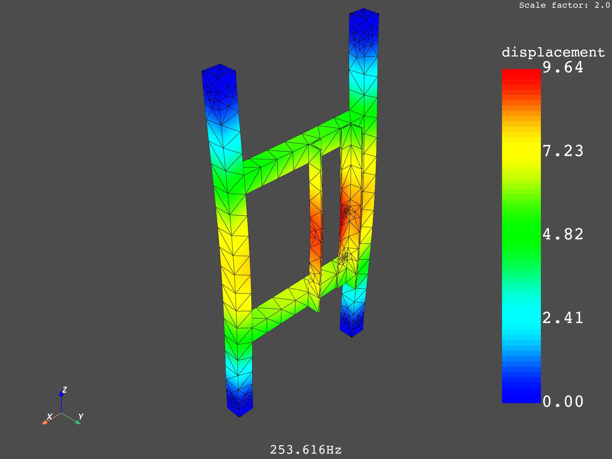
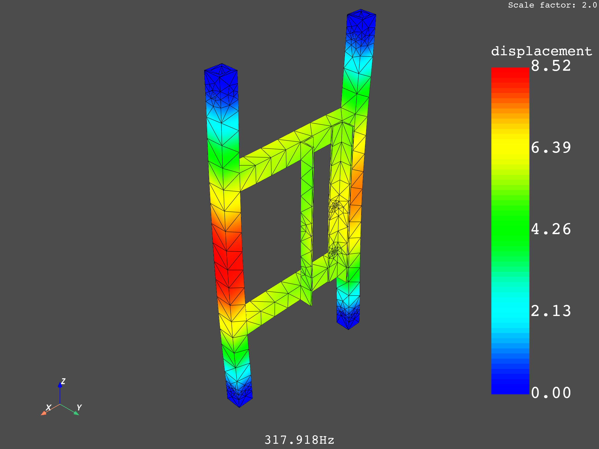
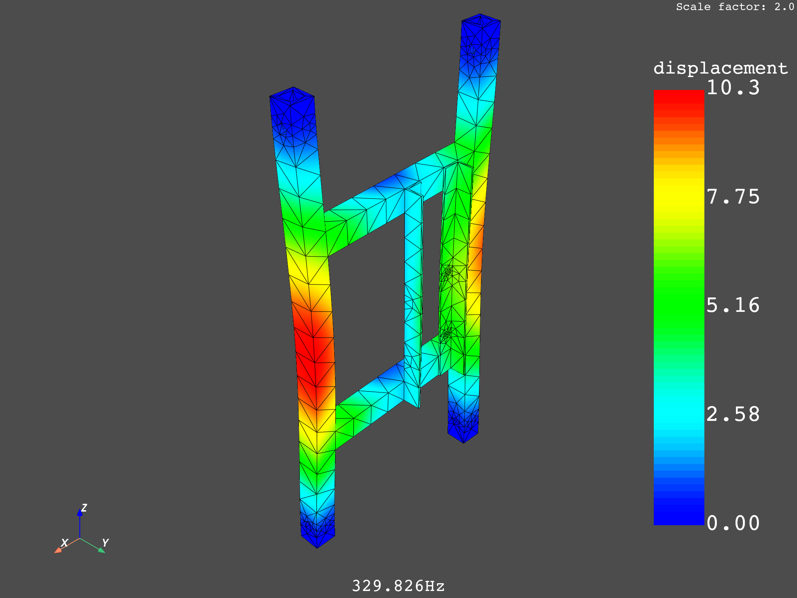
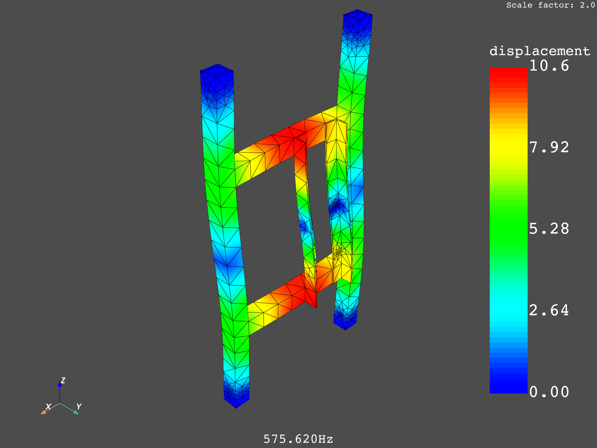
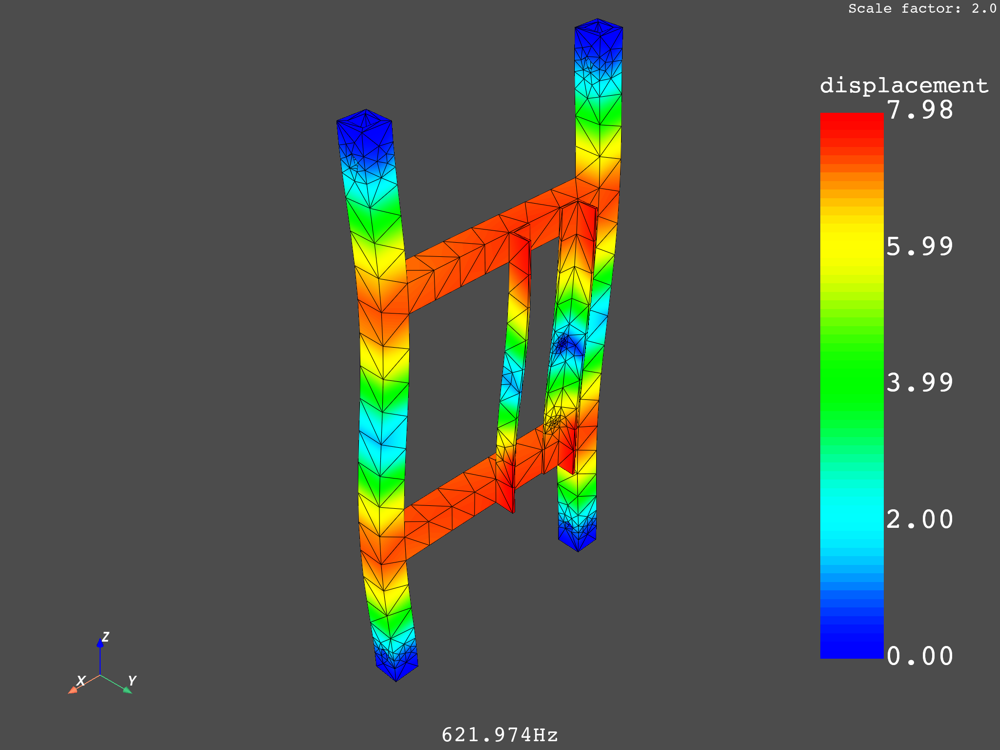
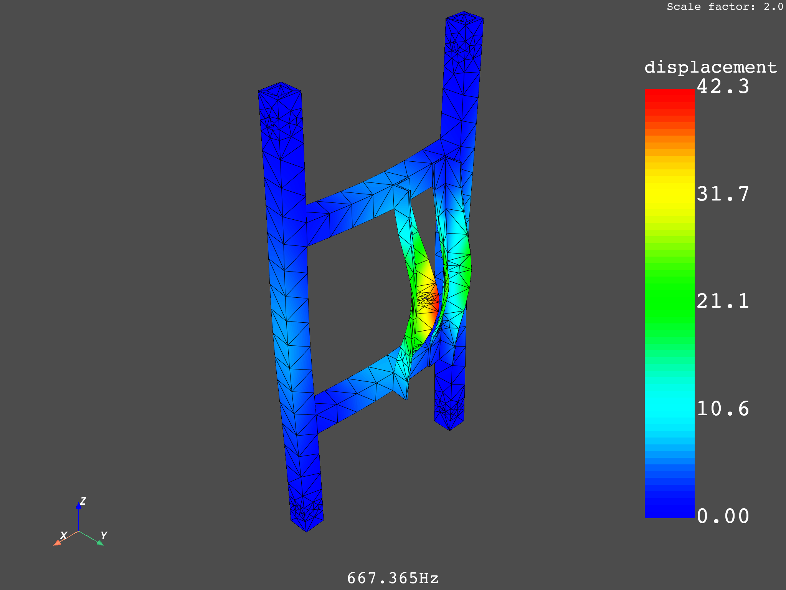

Note
Go to the end to download the full example code.
Plot and animate mode shapes with DPF#
This example shows how to extract mode shapes from a modal analysis result and how to plot and animate them.
from ansys.dpf import core as dpf
from ansys.dpf.core import animation
from ansys.dpf.core import examples
Retrieve mode shapes#
# Load the result file as a model
model = dpf.Model(examples.download_modal_frame())
print(model)
# Extract the displacement results which define mode shapes
disp = model.results.displacement.on_all_time_freqs.eval()
DPF Model
------------------------------
Modal analysis
Unit system: NMM: mm, ton, N, s, mV, mA, degC
Physics Type: Mechanical
Available results:
- displacement: Nodal Displacement
- stress: ElementalNodal Stress
- elastic_strain: ElementalNodal Strain
- element_euler_angles: ElementalNodal Element Euler Angles
------------------------------
DPF Meshed Region:
5886 nodes
2842 elements
Unit: mm
With solid (3D) elements
------------------------------
DPF Time/Freq Support:
Number of sets: 6
Cumulative Frequency (Hz) LoadStep Substep
1 253.615690 1 1
2 317.918491 1 2
3 329.825709 1 3
4 575.619678 1 4
5 621.973976 1 5
6 667.364882 1 6
Plot mode shapes#
# Get the frequency scoping (available frequency IDs for disp)
freq_scoping = disp.get_time_scoping()
# Get the frequency support (all available frequencies in the model)
freq_support = disp.time_freq_support
# Get the unit from the time_freq_support
unit = freq_support.time_frequencies.unit
# For each ID in the scoping
for freq_set in freq_scoping:
# Get the associated frequency in the time_freq_support
freq = freq_support.get_frequency(cumulative_index=freq_set - 1)
# Get the associated mode shape as a displacement field
disp_mode = disp.get_field_by_time_complex_ids(freq_set, 0)
# Extract the mode frequency and unit
text = f"{freq:.3f}{unit}"
# Plot the mode displacement field on the deformed mesh
disp_mode.plot(deform_by=disp_mode, scale_factor=2.0, text=text)
- 
- 
- 
- 
- 
- 
Animate a mode shape To suppress window pop-up, set the off_screen argument to True. ~~~~~~~~~~~~~~~~~~~~
animation.animate_mode(disp, mode_number=1, save_as="tmp.gif", off_screen=True)

Total running time of the script: (0 minutes 25.549 seconds)